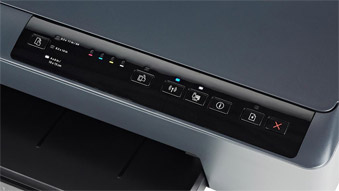

123 HP OFFICEJET PRO 6230 PRINTER DRIVER DOWNLOAD
The instructions provided here is for 123 HP Officejet Pro 6230 Printer with full feature downloadable drivers for Windows and MacOS. Connect you HP ojp 6230 and install software and full feature print drivers 123.hp.com/ojp6230.
- When your printer is connected through USB to your computer
- Search for printers in your Mac and then click on Print & Scan, Print & Fax or Printers and Scanners in the search results.
- The Enroll page displays.
- Create a new HP Connected account, or sign in to your existing account.
- Click on OJP 6230 and then click on the minus sign to get it removed from the queue.
- Detach the printer USB cable from your Mac. Read more..
The features provided below are common for the HP OFFICEJET PRO range of printers like OJP 6230, OJP 6860, OJP 6960,OJP 6968, OJP 6970, OJP 6970, OJP 8600, OJP 8660, OJP 8740…etc.,
- USB connectivity
- Wireless Setup
- Auto-Connect
- ePrint
- AirPrint
- Google Cloud Print
- Mobile Printing
- Wi-Fi Protected Setup
123 HP OFFICEJET PRO 6230 SETUP MOBILE PRINTING
123 HP Officejet Pro 6230 Google Cloud Print setup
Google Cloud Print is a service that enables you to print photos and documents securely from any network-connected device (like a phone, computer or tablet) or any mobile device to your 123.hp.com/ojp6230.
Step 1 : Registering your Google Cloud Print Ready printer
- A computer with Windows XP or later, Linux, OS X v10.7 or later, Chrome or a Chromebook
- Google Chrome browser must be installed on your computer
- A Google Cloud Print Ready printer (HP OJP 6230) that is on the same network as the computer (having an active Internet connection). For more 123.hp.com/officejet pro 6230
123 HP Officejet Pro 6230 non-eprint Setup
To setup and install your printer, you have to know the type of printer.If your printer is a non ePrint printer, it will not have the Google Cloud logo.
Register your printer on Chromebook to print from your Google account or Google driver using the steps given below.
- Switch on your printer and connect it to same Ethernet or Wireless connection as your Chromebook.
- After opening Chromebook on your Chrome browser, select the Menu icon and navigate to Settings.
- Proceed to click on Show Advanced settings and navigate to the Google Cloud Print. For more 123.hp.com/officejetpro 6230

123 Hp eprint
Requirements for ePrint:
- Ensure that your printer is connected to a functional Wireless network and your computer is connected to the same network as your printer.
- After locating the HP ePrint icon switch on Web Services on your computer top obtain the printer’s email id.
- Switching on Web Services on your printer establishes a communication line between your printer and the internet and web-related printing. Read more..
Apple Airprint
Requirements for AirPrint:
- An Apple device with v4.2 or other further versions.
- A wireless HP printer that supports AirPrint.
- A secured Wireless network and applications that enable AirPrint.
How to print using AirPrint:
- Open the application containing the document to be printed.
- Click on the Action tab to open the Action menu. Read more..
Mobile Print
Photos from your mobile device:
- In the HP ePrint app, click on Photos.
- Select the required photo and Edit to make any modifications.
- Click on Done to return and on Print to proceed with print job.
Printing a document:
- Click on Files in the HP ePrint app.
- Choose the required file type and select the corresponding document.
- Click on Edit for modifications, then click on Done to save. Read more..
123 HP OFFICEJET PRO 6230 WIRELESS PROTECTED SETUP
The instructions given below are applicable to connect via the pushbutton method.
- Ensure that your wireless and your printer support the WPS mode.
- Ensure that your router has a physical WPS button available.
- Please note that your network must use WPA or WPA2 security. If security is not enabled or you use the default network provided by your manufacturer, the router will not connect.
- Click on View Network Connections in Windows.
- Locate your network name and right click on it to open the status bar.
123 HP OFFICEJET PRO 6230 AUTO CONNECT
Requirements for compatibility with HP auto wireless connect:
All versions of Windows starting from Windows Vista to Windows 10 are accepted
- All versions of Mac OS X from v 10.5 and above are accepted.
- Ensure that your computer enables a wireless connection to your network and your computer’s operating system is compatible withthe wireless adapter. This is to enable the HP software trace the computer’s network settings.
- The network used must be over 2.4 GHz. HP printers do not enable 5.0 GHz.if your router supports 2.4 GHz to your printer.
HP OFFICEJET PRO 6230 CONNECT USING USB
- Switch on your printer and ensure that it is not connected to your computer via USB.
- If your printer is connected to the computer via USB remove the cable and ensure that there are no other programs running.
- Log in to our customer support webpage and download the software using the instructions displayed on screen.
- If necessary, type in your printer’s model number in the required field to identify your printer model and proceed to download the software.
- Choose between Basic Drivers and Full Feature Drivers and proceed to download accordingly.
123 HP OFFICEJET PRO 6230 WIRELESS SETUP
The connection type should be filled in as Wireless when prompted.
- Prepare your printer for the installation after confirming the Network name or your SSID, your network password and that your computer is connected to your network.
- Ensure that both your computer and printer are turned on and that they are both connected to the same wireless network.
- Navigate to Wireless settings on your printer using the control panel and select your network from the drop down menus of networks displayed.
- If your network name is not available select Enter New Network Name and add your network manually.
123 HP PRINTER TROUBLESHOOTING
123 HP Paper jam
The printer displays Paper Jam : Clear jam and press Ok message, on its control panel, the printer stops printing error.
- If it is connected to the printer, the error-message displays on your computer.
- When you print, the printer ejects a blank sheet of paper.
- The printer makes more noise than usual. Read more..
123 HP Ink Cartridges
- Navigate to HP SureSupply on your printer.
- Make sure you have selected the correct country/region at the bottom of the page.
- To confirm the cartridge compatibility with your printer, or to order new cartridges. Read more..
123 HP Printer Tray
- Remove all the papers from the photo tray.
- Push the photo tray to the end of its slot until it fits into it.
- Lower the output tray; on the printer’s control panel, press the OK button.
- Extend the tray with output tray lifted upwards.
- The tray end of its slot until it fits into it. Read more..
123 HP Printer Offline Problem
Ensure that the correct port has been chosen
- The printer is remained offline if the wrong communication port is chosen by the driver.
- Look for the devices from the Windows and then choose Devices and Printers in the available list of results.
- The Devices and Printers window is opened. Read more..
HP OFFICEJET PRO 6230 SCAN SETUP
- Select the file type you want to save, and then scan the item.
- From the control panel of your HP Printer, touch Scan.
- Then from your HP Printer, you will have to touch Computer to scan to the connected computer.
- Touch the name of your PC that you want to save the scanned document to.
- Touch the scan-to type option that corresponds to the document or photo you are scanning.
- Touch Start Scan to scan the document or photo. Read more..

NOTE: We recommend downloading a Full Feature version, but a Drivers-Only version is also usually available.
- Select the memory device, and then scan directly from the control panel of your HP Printer.
- On the control panel of your HP Printer, touch Scan.
- Then touch Memory device in order to scan to the memory card.
- Insert the memory device into your HP printer when prompted.
- Touch the Settings icon to change or adjust any settings if necessary, and then touch Done.
- Touch Start Scan to scan the document or photo. Read more..
123 HP OFFICEJET PRO 6230 SCAN CONNECTIVITY ISSUES
HP OFFICEJET PRO 6230 WIRELESS SCANNING ISSUE
When the HP Printer loses its connection or if it goes offline, the printer cannot scan
- Restart the computer, router and your HP printer.
- Run the HP Print and Scan Doctor tool
- Check the status of the wireless connection
- Evaluate a Wireless Network Test Results page to identify the wireless network problems. Read more..
HP OFFICEJET PRO 6230 WIRED SCANNING ISSUE
Confirm if the issue is print related
- Restart devices and check driver scan settings
- Restore the scan connection by restarting the computer and your HP Printer.
- Restarting the computer and printer can restore the lost scan connection. Read more..